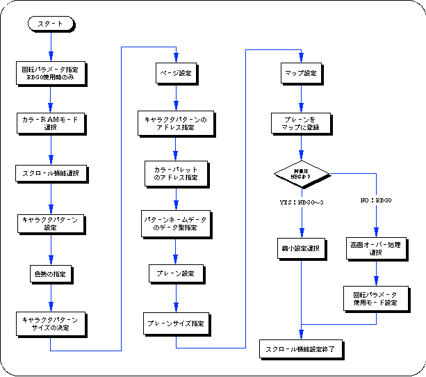

Return to previous page | Return to menu | Go to next page
Here, the procedure for scroll setting from character pattern setting to page → plane → map setting, reduction setting, scroll registration is explained with a simple flowchart, and the scroll function setting is summarized.
